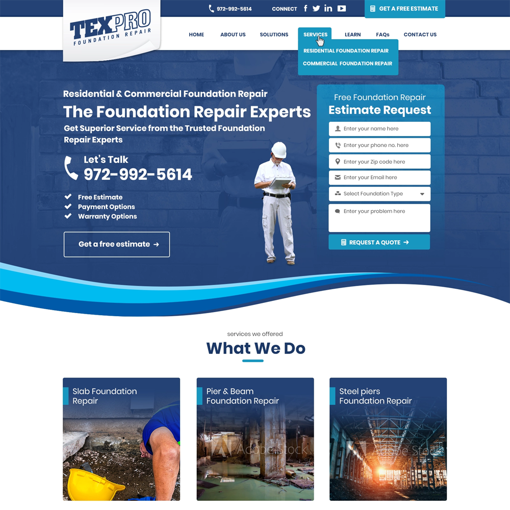
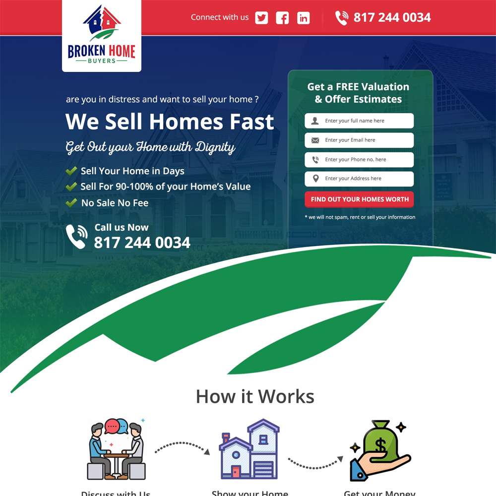

Our Portfolio:
Assalam o alaikum!
I am Noman S/o Moosa
i am a Student of Web Development in "SMIT"
Check my Recent Projects which We have done:

Descriptions:
TexPro Foundation Repair's website provides a comprehensive digital platform for homeowners seeking expert solutions for their foundation issues. With a sleek, user-friendly interface, visitors can easily navigate through services ranging from slab repair to drainage correction. Engaging visuals showcase before-and-after transformations, instilling confidence in TexPro's expertise. Informative content elucidates common foundation problems and their remedies, positioning TexPro as an authority in the field. A prominent FAQ section addresses queries, fostering trust and transparency. Contact forms streamline communication, ensuring swift assistance for inquiries or consultations. Mobile responsiveness guarantees seamless access, empowering clients to take the first step towards a structurally sound home.

Descriptions:
The Broken Home Buyer website offers a lifeline to homeowners burdened by distressed properties. Through a clean and intuitive interface, users find a beacon of hope amidst financial and structural woes. Vibrant visuals convey the transformational journey from dilapidation to restoration. Succinct yet informative content guides visitors through the process of selling their troubled homes with ease and transparency. Frequently Asked Questions provide clarity, while a responsive contact form ensures swift assistance. Mobile compatibility ensures accessibility, empowering homeowners to take control of their situations from any device. Broken Home Buyer is more than a service—it's a partner in rebuilding lives.